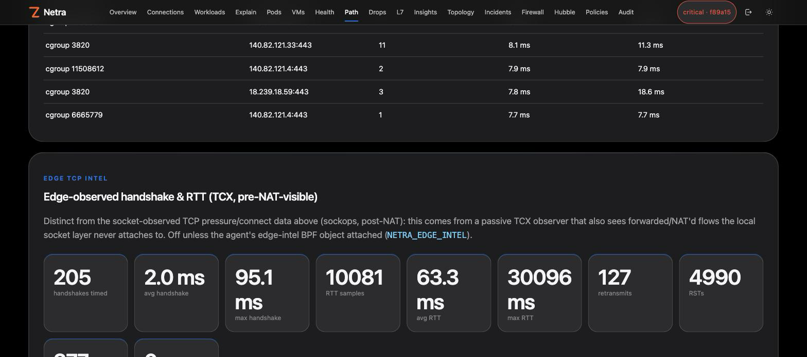
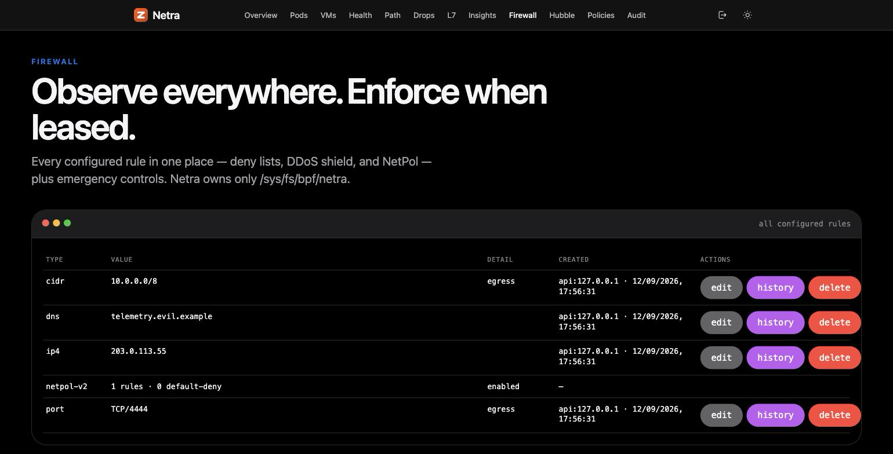
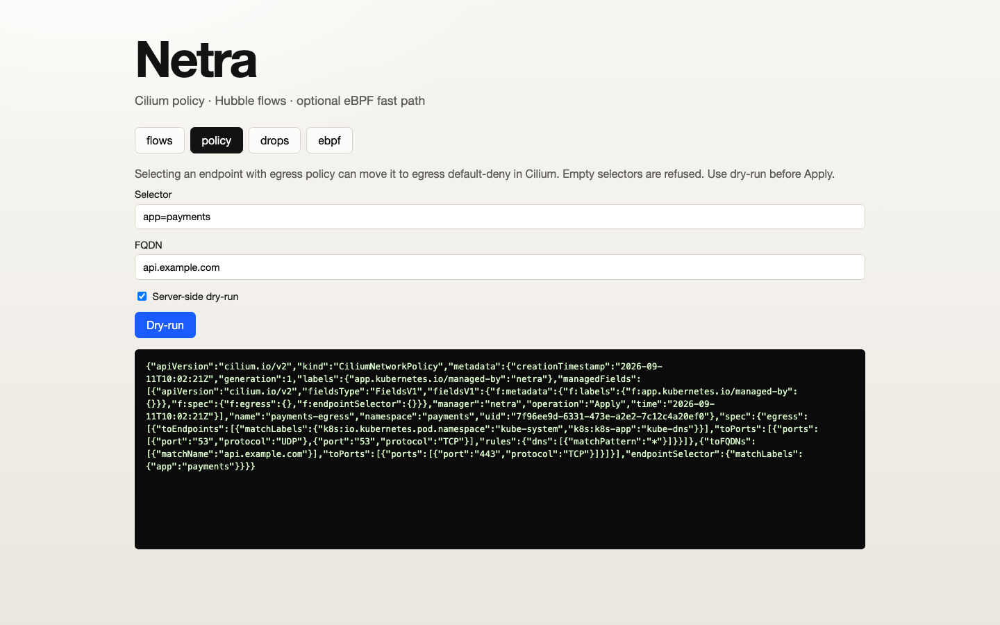

The old promise was "no payloads". The accurate one is stronger and more useful: nothing that could carry your data is collected by default, every exception is opt-in, limited and stated here.
Metadata only: flow tuples and counters, workload and process identity (comm, pid, uid, cgroup), DNS query names on UDP/53, TLS SNI and JA3/JA4 fingerprints, the HTTP/1 method and Host of a single cleartext packet. No payload bytes are copied to user space.
Packet capture: full frames of a filtered, time-boxed session. Sampled L7: the first 128 bytes on ports you configure, parsed in the agent. TLS plaintext: up to 128 bytes per call, from processes you name. Each is off until you turn it on.
Command lines, environments, executable paths, Secret contents, logs or dmesg. Request paths, query strings, headers, bodies, SQL text and cache keys from the sampling sensors. API keys or sink credentials in a log, an API response or a metric.
| Question | Answer |
|---|---|
| Does Netra decrypt TLS? | Not by default. TLS plaintext sampling is a separate opt-in that reads OpenSSL's buffers in the agent, for processes you list. The list is enforced in the kernel before any byte is copied. The plaintext is parsed in memory and never exported; only counts (method, status, a validated host name) leave the agent. |
| What can a sampled count contain? | An allowlisted operation name (a Redis command, a SQL verb, a Kafka API, an HTTP method and status, a gRPC method), a coarse outcome, or a validated pattern. This is enforced by the shape of the output and tested by planting secrets in real requests and asserting they appear nowhere the agent or controller exposes. |
| What does the host-PID view widen? | Finding each process's OpenSSL library needs a view of the host's processes. The chart asks for it only when TLS sampling or process metadata is enabled. |
| Who can download a capture? | The operator role or above. With OIDC on, the audit trail names the person. |
| Can a busy node be made to spend unbounded resources? | No. Sampling is rate-limited per flow and the kernel counts what it skipped; capture has a packet-rate cap, a time box and a store cap; per-workload metrics have a hard cardinality cap. |
| Are credentials for exports safe? | Headers, tokens, secrets and passwords are never logged and never appear in an API response. CI plants them and scans every request body, log line and response. |
Five sensors answer the questions that used to need a lab: which connection lost packets, which flows retransmit, which service is refusing connections, and what the application protocols are doing.
The dropped packet's connection, the reason (named by the running kernel) and the kernel function that dropped it. No header yet? It is counted with no tuple, never a made-up one.
Retransmits, resets and state changes per flow, with the tuple. Names the flows behind the older aggregate counters. No BTF needed.
Accept-queue depth and overflow per listening socket through the kernel's socket-diagnostics interface: no BPF program, no payload.
Redis commands, PostgreSQL and MySQL verbs, Kafka APIs, HTTP/1 and HTTP/2 status, gRPC methods and errors. Counts carry a role (issued or served) so a request seen twice is never counted twice.
HTTPS method, status and host from OpenSSL, on the processes you allowlist. The same allowlisted counts as cleartext protocols, read where the application hands bytes to the library.
What each sensor costs is measured and shown on the next page, with where and with what caveats.
The dashboard keeps the views operators rely on and adds the kernel-level evidence behind them.
Active TCP connect latency and transport pressure (cwnd, packets out, retransmits, lost, delivered rate) per cgroup and workload, from a socket-level program.
A passive TCX observer adds handshake and RTT histograms and retransmit / RST / FIN counters for forwarded flows that the local socket layer never attaches to.
L3/L4 flows with direction and hook, DNS timing, TLS SNI and JA3/JA4, cleartext HTTP method and Host, workload identity, a live topology, and a queryable flow history with RED metrics.
Softnet, interface and qdisc pressure, a read-only sysctl audit against a baseline, per-node CPU, memory and load, and listen-queue depth.

| Sensor | Measured cost | Where, and the caveat |
|---|---|---|
| Drop attribution | about 100 ns per drop; about 540 ns on a shared runner | 4-vCPU arm64 VM on Linux 6.8, and a GitHub runner on 6.17. Loopback, not a NIC under load. It runs only for dropped packets; on a host dropping millions per second use off. |
| Sampled L7 | about 29 ns on an unconfigured port, 65 ns on a configured one | Per packet, Linux 6.8 arm64 VM, loopback. |
| TLS plaintext | about 1.0 µs (x86_64) and 1.4 µs (arm64) per probe; about 3 to 4% on an HTTPS request that includes a handshake | Shared CI runners, loopback, one client library. |
| Agent map reads | 194% of a core down to about 23%; memory 313 MiB down to about 114 MiB | A busy shared lab host with about 130,000 flows per table. Batched reads, and identical report output (checked against the old code). |
Measured on lab hosts and CI runners; results depend on your kernel, hardware and traffic.
Netra's containment layer is deliberately an emergency tool, not a full CNI policy engine, QoS system, L7 proxy or IDS/IPS. It starts in observe mode, enforcement needs a lease, and everything reverts on its own.
Controller-side insights turn eBPF metadata into a workload dependency graph, a known-good behavior baseline, drift detection for newly observed destinations, DNS names, SNI and HTTP hosts, time-window rate baselines with deterministic multipliers, exposure scoring, and review-only remediation proposals.
When Cilium is present, Netra plans and applies CiliumNetworkPolicy with a fresh single-use preflight receipt, risk confirmation for high-impact plans, rollback history, and optional policy-as-code reconciliation from a mounted directory.

